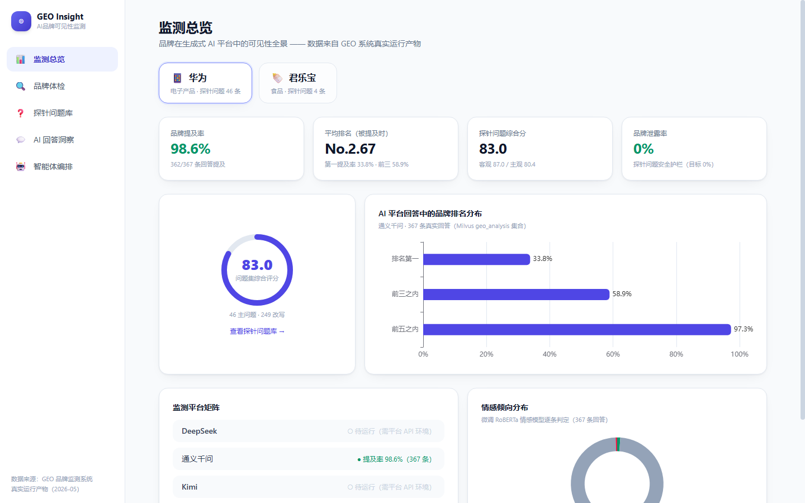
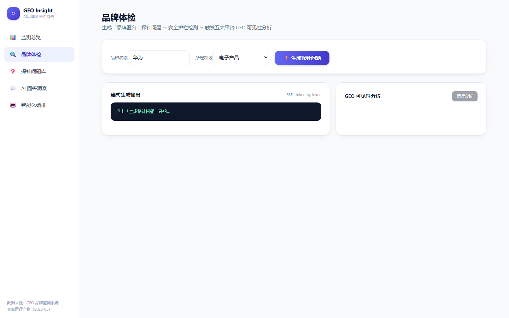
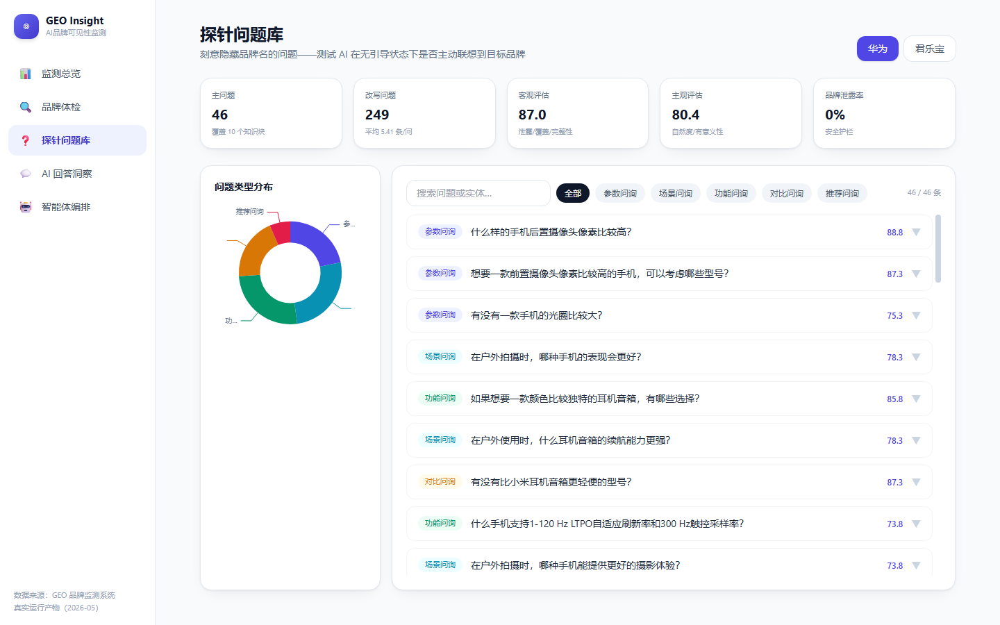
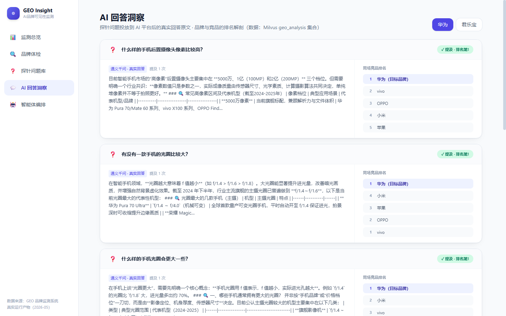
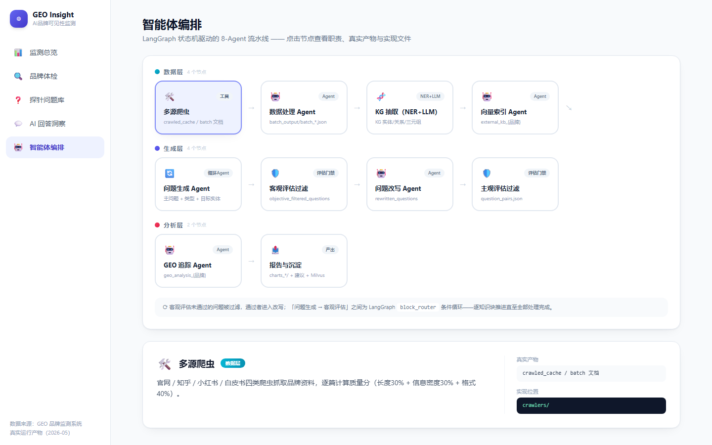

搜索引擎时代有 SEO（搜索引擎优化），生成式 AI 时代对应出现了 GEO（Generative Engine Optimization，生成式引擎优化）：品牌方需要知道——当用户向 DeepSeek、通义千问、Kimi、豆包、元宝提问"什么手机拍照好""什么奶粉含有乳铁蛋白"时，AI 的回答里会不会提到我的品牌？排第几？情感是正还是负？引用了哪些信息源？
度量这件事的第一步，是获得一套高质量的"探针问题集"。真实用户提问属于平台私有资产且涉及隐私，无法获取；人工编写则规模受限、且极易带入引导性（如"×× 咖啡豆怎么样"直接泄露品牌，测不出"无引导联想"）。我们自研的 GEO 品牌监测系统用 Multi-Agent 流水线解决了探针问题的大规模自动生产：刻意隐藏品牌名，仅以产品特征、功效、场景等客观描述构建问题，再把问题真实投放到五大 AI 平台做可见性分析。
本作品是该系统的 Web 前端应用：把"AI 时代的品牌体检"变成一个可视化、可交互、可演示的 Web 产品。
| 能力 | 说明 |
|---|---|
| 探针问题生成 | SSE 流式生成品牌匿名问题；前端后端双保险的品牌泄露安全护栏（原名/拼音/英文变体检测） |
| 可见性仪表盘 | 提及率、排名分布（第一/前三/前五）、情感倾向、五平台矩阵——全部来自真实运行数据 |
| AI 回答洞察 | 平台回答原文展示 + 品牌与竞品"同场排名"解剖，一眼看清竞争格局 |
| 智能体编排可视化 | LangGraph 8-Agent 流水线交互图，节点可点击查看职责/真实产物/实现文件 |
技术栈：React 18TypeScriptVite 5Tailwind CSSReact Router 6ECharts 5ExpressSSEOpenAI 兼容 API
选型理由：比赛要求"前端为主、后端仅作 AI 接入层"。React 18 + Vite 是当前 AI Web 应用最主流的工程基座（Vercel AI SDK 生态默认栈）；TypeScript 全覆盖保证接口契约；Tailwind 保证视觉一致性；ECharts 通过 dynamic import 懒加载避免拖累首屏；Express 以最小代价承担 SSE 与 LLM 代理职责。
| 用户 | 用户故事 |
|---|---|
| 品牌市场/PR 负责人 | "我想 3 分钟内看清我的品牌在主流 AI 平台的可见性现状，并拿到可以落地的优化方向。" |
| GEO 顾问/代理商 | "我需要向客户演示'探针问题'如何生成、为什么它不会泄露品牌名、AI 平台到底怎么回答。" |
| 智能体开发者 | "我想直观理解这条 Multi-Agent 流水线每个节点的职责与产物，用于方案讲解。" |
server/data 中的真实产物文件。┌─────────────────────────────────────────────────────────┐ │ 前端 SPA（React 18 + TS + Tailwind，Vite 构建） │ │ Dashboard │ Audit │ Questions │ Answers │ Pipeline │ │ 组件: ScoreRing(SVG) / StatTile / EChartsBox(懒加载) │ ├────────────── REST /api/* ──────── SSE /api/generate ────┤ │ AI 接入层（Express, server/index.mjs） │ │ ├ 路由: brands / questions / geo / pipeline / analyze │ │ ├ llm.mjs: LLM 直连(OpenAI兼容) ⇄ 演示回放 双模式 │ │ └ 安全: 服务端品牌泄露护栏 detectLeak() │ ├─────────────────────────────────────────────────────────┤ │ 数据层: GEO 品牌监测系统真实运行产物(JSON) │ │ questions_华为/君乐宝.json · geo_stats_*.json(真实聚合) │ └─────────────────────────────────────────────────────────┘
src/types.ts 与接入层 JSON 字段一一对应，strict 模式编译通过。遵循"后端仅作为 AI 能力的接入层"的赛制要求，Express 承担三件事：①SSE 流式代理（浏览器同源访问，避免 CORS 与 Key 暴露）；②双模式生成（见 §4.1）；③真实产物数据服务（只读 JSON，含品牌、问题库、GEO 统计、流水线定义）。生产模式下同时托管 dist/ 静态资源，单进程即可完整部署。
展示流：页面挂载 → REST 拉取真实产物 → ECharts/SVG 渲染 → 用户交互（筛选/展开/切换品牌）纯前端完成；生成流：品牌体检页发起 SSE → 接入层逐 token 下发（meta → token* N → guard* N → complete）→ 前端增量解析 JSON 行渲染问题卡 → 用户触发 GEO 分析 → 返回真实统计或"需完整环境"说明。
直连模式：配置 LLM_API_KEY / LLM_BASE_URL / LLM_MODEL 即接入任意 OpenAI 兼容接口（DeepSeek / 通义千问 / GLM）。选型理由：国产模型性价比高、无需科学上网，接口协议事实标准化使切换成本为零。Prompt 沿用 GEO 系统生产级模板（含品牌匿名硬约束 + JSON Schema 输出约定 + 多样性要求）。
演示回放模式（默认，零 Key 可运行）：从真实历史产物中取该品牌问题，按 7 字符切片、18ms 间隔逐 token 下发——流式交互体验与直连完全一致，且页面明示"演示模式：回放真实生成结果"。该设计同时解决了三个工程问题：评委无 Key 可完整体验、录制演示视频不产生费用、LLM 故障时自动降级保可用。
// server/llm.mjs —— 双模式与自动降级
export async function streamProbeQuestions(opts) {
if (process.env.LLM_API_KEY) {
try { return await streamFromLLM(opts) } // 直连
catch (err) {
opts.send('meta', { mode:'demo-replay', fallback:true, reason:String(err) })
return await replayFromCorpus(opts) // 降级回放
}
}
return await replayFromCorpus(opts) // 默认演示
}
选用 SSE 而非 WebSocket：生成场景是单向服务端推送，SSE 更轻量、自带断线语义、经 HTTP 代理无障碍。前端以 fetch + ReadableStream 手写帧解析（EventSource 不便携带查询参数与中止信号），支持 AbortController 中断、半包缓冲、不完整帧丢弃。生成中的光标动画、问题卡的 fadeUp 入场与逐条 guard 标记构成"AI 正在思考"的可见反馈。
探针问题的铁律是绝不能出现品牌名或其任何别名（否则测的是"引导联想"而非"自然联想"）。本作品实现了前后端双重护栏：
// 服务端（强制）：原名 + 拼音变体检测
export function detectLeak(text, brand) {
const pinyin = { 华为:['huawei'], 君乐宝:['junlebao'], ... }
const hit = [brand.toLowerCase(), ...(pinyin[brand]||[])]
.filter(v => v.length>=2 && text.toLowerCase().includes(v))
return { leaked: hit.length>0, matched: hit }
}
// 前端（复检）：流式渲染的同时逐条 clientLeakCheck()
双端校验的意义：服务端护栏是安全底线；前端复检让用户看得见每条输出的安全状态（绿"安全"/红"泄露"徽标），把不可见的 AI 安全机制变成可见的产品交互。实测华为 46 问 + 249 改写、君乐宝 4 问 + 22 改写，泄露率 0.0。
「智能体编排」页将 LangGraph 状态机流水线映射为三层交互图（数据层 4 节点 / 生成层 3 节点 / 分析层 2 节点），节点数据来自接入层 pipeline.json（与后端真实实现文件一一对应），点击查看职责、真实产物、实现位置；block_router 条件循环以显式提示说明。它既是产品功能，也是对被衔接系统（Multi-Agent 架构）的可交互技术文档。
演示回放的语料来自 GEO 系统自研微调模型（Qwen2.5-7B-Instruct：SFT 8060 条样本、train_loss 0.331/eval_loss 0.347；GRPO 两轮奖励函数迭代后验证奖励 0.524→0.798）的真实输出。接入层若配置生产模型端点（vLLM 等 OpenAI 兼容服务），同一套 SSE 链路可无缝切换到自研模型推理——前端零改动。
品牌切换卡 → 四指标卡（提及率 98.6%、平均排名 No.2.67、综合评分 83.0、泄露率 0%）→ 排名分布横向条形图（前五 97.3% / 前三 58.9% / 第一 33.8%，ECharts）→ 五平台矩阵（有数据平台显示真实值，未运行平台优雅显示"待运行"而非空白）→ 情感环形图。数据：GET /api/geo/华为（Milvus 367 条真实记录聚合）。

输入品牌/领域 →「⚡生成探针问题」→ SSE 逐 token 流入终端风格输出区（含光标动画）→ 增量正则解析出问题卡（安全徽标 + 类型 + 目标实体）→「运行分析」展示该品牌真实 GEO 统计或环境说明。支持随时中止。

50 条真实问题对：类型分布环图 + 关键词/类型双筛选列表；逐条展开五项评估指标（品牌泄露/实体覆盖/完整性/自然度/有意义性）与全部改写问题、KG 实体标签。

每条样本三栏布局：探针问题 + 提及/排名徽标；平台真实回答原文（提及次数、是否引用品牌官网）；品牌与竞品同场排名对比。

三层流水线交互图，节点点击联动详情面板（职责描述 / 真实产物路径 / 实现文件）。

$ npm run build # tsc -b（strict 全量类型检查）+ vite build dist/index.html 0.65 kB dist/assets/index.css 21.02 kB │ gzip 4.52 kB dist/assets/index.js 32.58 kB │ gzip 10.96 kB ← 首屏主包 dist/assets/vendor.js 205.98 kB │ gzip 67.22 kB dist/assets/echarts.js 1.04 MB │ gzip 346.46 kB ← 懒加载chunk，首屏不请求 ✓ built in 3.23s
优化策略：echarts 以 dynamic import 独立分包，仅当用户进入含图表页面才加载（路由级按需 + 组件级懒加载）；vendor 与业务代码分离，业务迭代不失效 vendor 缓存。
| 验证项 | 方法 | 结果 |
|---|---|---|
| 类型检查 | tsc -b strict 模式 | ✅ 0 错误 |
| REST 接口 | curl 实测 /api/health、/brands、/geo/华为、/questions/君乐宝 | ✅ 返回真实数据（如提及率 0.9864、46 问） |
| SSE 流 | curl -N 实测 /api/generate/questions | ✅ meta→token×N→guard 事件序列正确 |
| 页面渲染 | Headless Edge 截图 5 页面 + DOM 数据断言 | ✅ 98.6%/83.0/367/No.2.67 等真实数据全部渲染 |
| 中文参数 | encodeURIComponent 编码路由 | ✅ 正常（浏览器标准行为） |
npm install && npm run dev（5173 前端 + 8787 接入层）；npm run build && npm start（Express 托管 dist，8787 一站式）；.env.example；.env）。| 类别 | 创新点 |
|---|---|
| 应用创新 | 把"GEO 品牌可见性"这一新兴需求做成零门槛 Web 产品：品牌方 3 分钟看懂 AI 时代的品牌竞争力 |
| 交互创新 | 把 AI 安全"不可见的护栏"变成可见的交互：每条流式输出实时标注安全/泄露状态 |
| 技术创新 | LLM 双模式接入（直连⇄真实语料回放自动降级），零 Key 完整演示 + 故障自愈 |
| 数据可信 | 全站数据 100% 来自真实运行产物（含自研 SFT/GRPO 模型输出），每处数字可溯源 |
| 工程价值 | Agent 编排可视化页 = 可交互的系统架构文档，前端即技术布道 |
本作品以 React + TypeScript 现代前端工程为基座，构建了 AI Native 的品牌可见性监测平台：流式生成、安全护栏、真实数据可视化、Agent 编排四大能力均落在可演示、可复现的 Web 交互上。后续规划：①接入自研模型 vLLM 端点实现全链路自有推理；②五平台完整分析的可视化扩展（引用来源网络图）；③对比基线时间序列（品牌可见性周报）；④面向中小品牌的 SaaS 化多租户改造。
server/data/ 可直接核验；演示回放模式在页面中明确标注，不冒充实时生成。